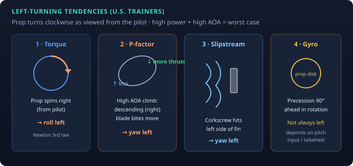

PHAK Ch. 5 · MIT 16.687 · study note
On most U.S. single-engine trainers the propeller turns clockwise as viewed from the pilot’s seat. At high power and high AOA (takeoff / climb), several effects produce left roll and/or left yaw. Right rudder is the usual antidote—not a mystery, a checklist of mechanisms.

Newton’s third law: propeller applies a twisting force to the air → air applies equal-and-opposite twist to the airplane. Clockwise prop (from pilot) → airplane tends to roll left. Strongest at high power; felt more at low airspeed when ailerons are less effective.
At high AOA, the descending (right) blade has a higher angle of attack / produces more thrust than the ascending (left) blade. Center of thrust moves right → left yaw. Classic knowledge-test: left-turning from P-factor is due to the descending right blade producing more thrust—not torque, not “the prop wash only.”
The prop imparts a corkscrew of air that wraps around the fuselage and often strikes the left side of the vertical stabilizer → left yaw. Strong at high power / low speed (takeoff roll and initial climb).
A spinning prop acts like a gyroscope. A force that tries to tilt the disk shows up as a reaction 90° ahead in the direction of rotation. Whether that makes left yaw depends on the maneuver (classic: tailwheel raising the tail on takeoff). Course/PHAK note: this is not always a left-turning tendency—don’t force every yaw into this box.
| Phase | Main players |
|---|---|
| Takeoff roll / rotation | Torque, slipstream; gyro if pitch rate high (tailwheel) |
| Climb (high power, high AOA) | P-factor + slipstream + torque |
| Cruise | Much reduced (lower AOA, less power) |
← Notes · AOA · Ground effect